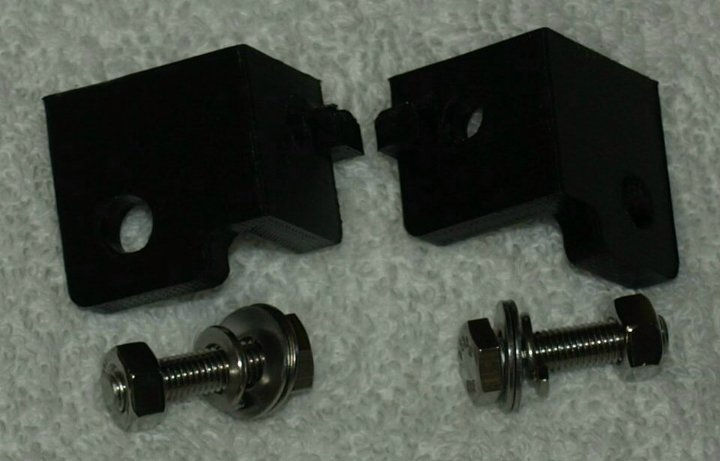
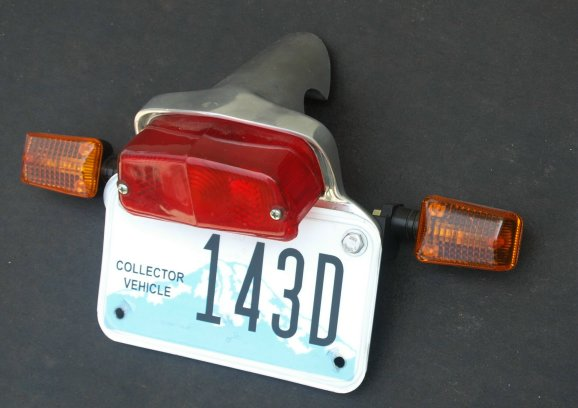
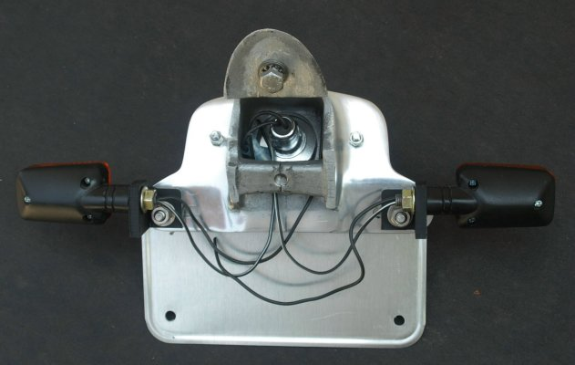
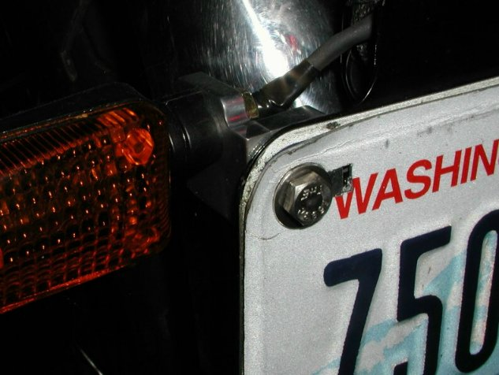

Mini Stalk Turn Signal Brackets
The price for this bracket set (part # 17-100030/B) is
$28.62,
and is current as of
02/12/21.
We no longer mill this bracket out of aluminum, but print it out of ABS plastic.
The reasons for this is change are the price of aluminum has been going up, by printing the
brackets has lowered the cost by almost $30 a set, the ABS plastic is more than strong enough for the job
and we think the black plastic matches the black Mini Stalk turn signals better than the aluminum.

This pictures shows the brackets and the stainless mounting kit.

This shows one of the custom tail light assemblies with the Mini Stalk Turn Signals mounted using our brackets.
More Information about the custom tail light assemblies and Mini stalk are at:
- Old Britts Housing, Tail Light, Custom (part # 17-100030)
- Mini Stalk Turn Signals (part # 17-100110)

This shows the brackets mounted to the tail light.

If you are going to use this turn signal bracket on a stock license plate bracket, you will have to file a rectangular slot in the stock bracket for the
locating boss of the turn signal mount. You may have to put a spacer between the license plate (an old license plate and the old aluminum brackets are used in this picture)
and file down the locating boss, so the bolt will tighten up against the license plate and not locating boss on the turn signal bracket.
 Note:
Note:The Mini Stalks come with a smaller bullet terminal than the standard Lucas bullet terminals. If you want the Mini Stalks to
plug into your stock wiring harness, you'll need to replace these -- see
Lucas Bullet Type Terminal and Installation.
Return to Old Britts home page
….. Our Products, Ordering
Norton Parts…..
Lamps, Direction Indicators
This page was written and designed by F. H. Eaton
& Associates if you have any questions or comments please
contact us at info@fheaton.com